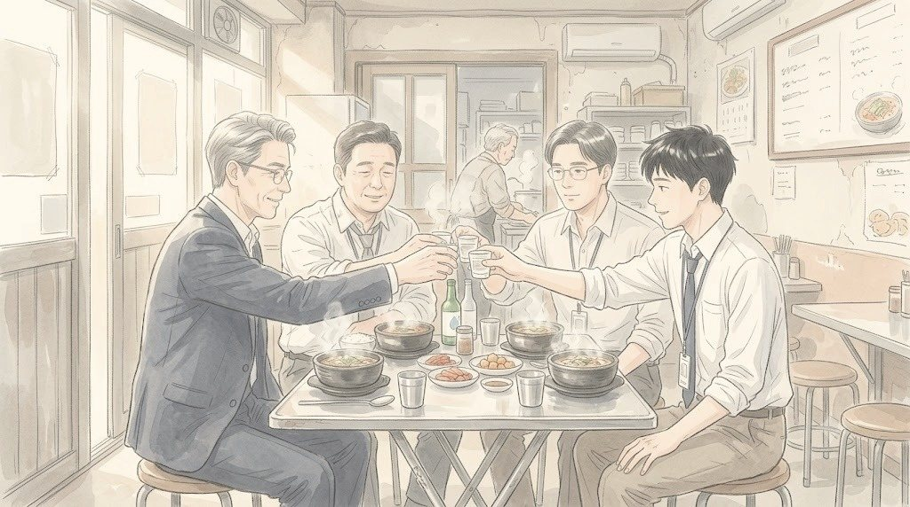
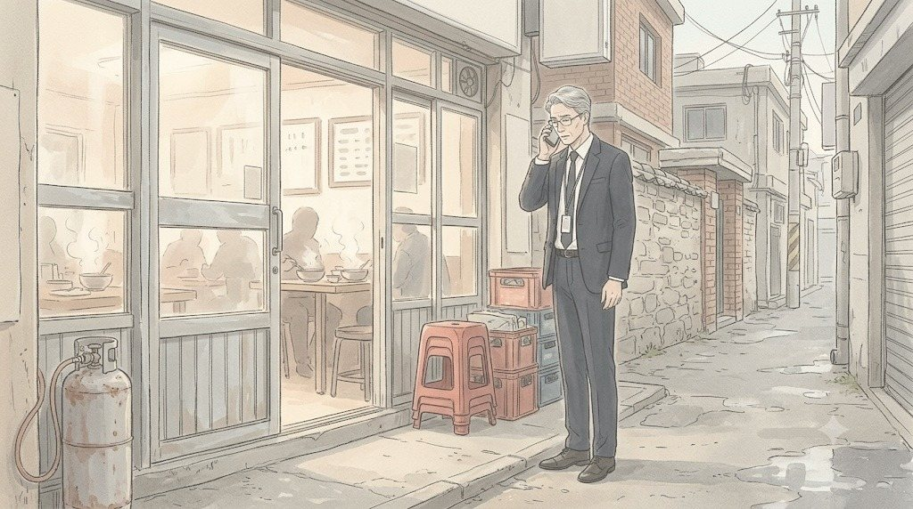
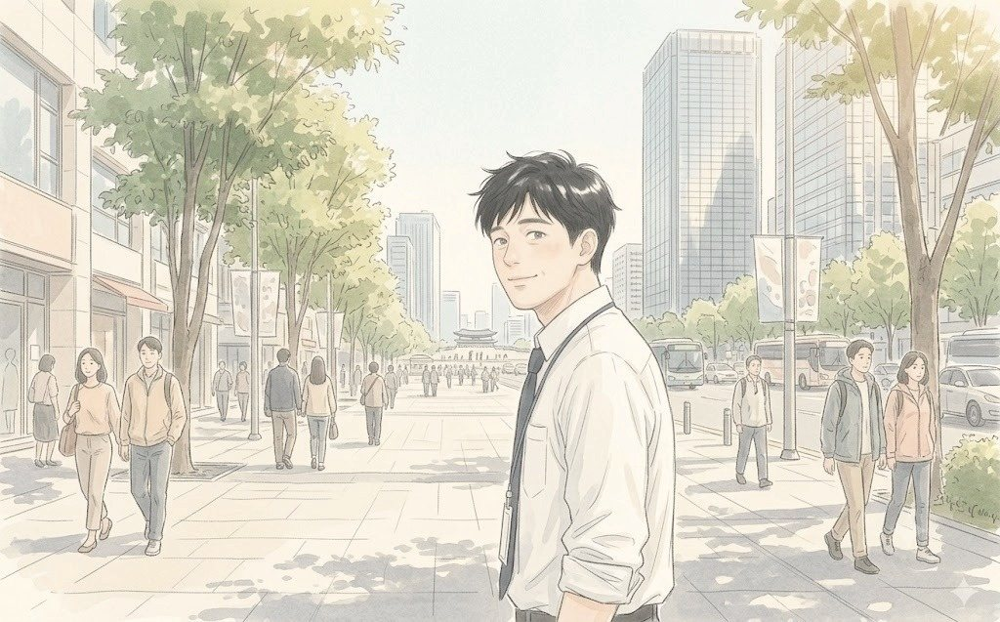

문혜경은 빨간 볼펜으로 9페이지 맨 위에 무언가를 적었다.
이우진의 자리에서는 보이지 않았다. 그녀는 볼펜을 내려놓고 말했다.
"아이가 아프면 집에 있어야죠."
회의실의 몇 사람이 고개를 들었다.
"다음부터 그런 일은 금요일에 미리 말해요. 대신 발표할 사람 정해서. 오늘처럼."
그 말이 배려인지 경고인지, 회의실 안의 누구도 확신하지 못했다. 다만 이우진은 하나를 알았다. 지금 이 순간 최윤아의 이름이 사장의 입에서 나왔다는 것. 그리고 그 이름이 아픈 아이와 함께 기억될 거라는 것. 그게 좋은 일인지 나쁜 일인지는 알 수 없었다.
"계속해요."
이우진은 남은 숫자를 보고했다. 결제 이탈률. 다섯 단계로 줄인 뒤 사흘 동안, 결제 화면까지 갔다가 나가는 고객이 눈에 띄게 줄었다. 비회원 간편 구매가 전체 주문의 4분의 1을 넘었다. 연휘를 뺀 다섯 개 브랜드의 팝업을 내리자, 첫 화면에서 바로 나가는 비율이 낮아졌다.
"사흘은 짧습니다. 다음 주에 일주일 치로 다시 보고드리겠습니다."
최윤아의 주석대로였다. 3일은 짧다는 것 먼저 인정.
문혜경은 보고서를 덮었다. 그리고 회의실을 한 바퀴 둘러봤다. 권재혁, 백승원, 한지석, 그리고 아직 서 있는 이우진. 마지막으로 문 옆의 빈 보조석. 최윤아가 지난주에 앉았던 자리였다.
"이제 시작이네."
그 한마디였다. 그녀는 일어나 회의실을 나갔다.
7시 41분. 지난주보다 7분 빨랐다.
문이 닫히고 3초 동안 아무도 움직이지 않았다. 그리고 백승원이 의자에 등을 기대며 길게 숨을 내쉬었다. 그 소리가 너무 커서, 맞은편의 재무팀장 오정택 상무가 웃었다. 웃음이 번졌다. 경영기획, IT, 해외사업부 사람들이 하나둘 일어나며 권재혁에게 눈인사를 했다. 3주 만에 처음이었다.
엄기태 상무만 아무 표정 없이 나갔다. 그는 문 앞에서 출력본을 테이블에 내려놓고 갔다. 연휘를 뺀 다섯 개 브랜드, 라는 줄에 볼펜 자국이 깊게 나 있었다.
황인석 대표가 권재혁에게 다가왔다.
"권 상무, 수고했어요. 다음 주 대표 회의 때 이 숫자 내가 보고할게요."
"네, 대표님."
"그리고 이 과장."
황인석이 이우진을 봤다.
"첫 문장에서 좀 막혔지만, 괜찮았어요. 다음에는 막히지 마요."
그는 웃으며 나갔다. 그 웃음에는 칭찬과 경고가 정확히 반반 섞여 있었다. 이우진은 그 비율을 처음으로 읽을 수 있었다.
엘리베이터 앞에서 누군가 이우진의 소매를 살짝 잡았다. 해외사업팀 임소연 과장이었다. 인도네시아만 7년을 맡아 온 사람. 화요일 화상회의 내내 거의 말이 없던 그녀가, 오늘은 먼저 말을 걸었다.
"이 과장님, 화요일 회의록 고마웠어요."
"네?"
"아유가 어제 메일을 보냈어요. 본사 회의록을 처음으로 자기 팀원들한테 돌렸대요. 자기 말이 그대로 적혀 있어서."
임소연은 휴대폰을 꺼내 메일 한 줄을 보여 주었다. 영어 문장 하나였다.
'For the first time, Seoul heard us.'
(처음으로, 서울이 우리 말을 들었다.)
"7년 동안 제가 못 한 걸 회의록 한 장이 했네요."
그녀는 웃었지만, 그 웃음 끝이 조금 씁쓸했다. 뒤에 서 있던 류재민 대리가 꾸벅 인사를 했다. 입사 3년차, 해외사업팀 막내. 그는 이우진의 출력본 9페이지를 가리키며 작게 말했다.
"과장님, 이 결제 다섯 단계요. 자카르타 몰에도 그대로 붙일 수 있을까요?"
이우진은 대답하지 못했다. 엘리베이터 문이 열렸다. 그 질문은 문이 닫힌 뒤에도 오래 남았다.
8시 10분. 회사 뒤 해장국집 「일곱시 해장국」.
'5인 이상 입장 불가.' 넷은 테이블 하나에 앉았다. 권재혁이 메뉴판도 보지 않고 주문했다.
"해장국 넷. 수육 하나. 그리고..."

그는 잠시 망설였다.
"소주 한 병."
"상무님, 아침 8시인데요."
백승원이 말했다. 말과 달리 얼굴은 웃고 있었다.
"우리한테는 금요일 밤이잖아요. 3주째."
소주가 나왔다. 권재혁이 직접 네 잔을 따랐다. 이우진은 상무가 따라 준 술을 받는 게 처음이었다. 두 손으로 받았다. 손이 아직 조금 떨렸다.
"이 과장."
"네."
"아까 첫 문장."
이우진의 얼굴이 붉어졌다.
"죄송합니다. 회의록에는..."
"회의록에는 '이우진 과장, 결제 단계 개선 결과 보고'. 그 한 줄이면 돼요."
권재혁이 잔을 들었다.
"막힌 건 여기 넷만 알면 되고."
한지석이 먼저 웃음을 터뜨렸다. 백승원도 웃었다. 이우진은 웃다가, 갑자기 눈 안쪽이 뜨거워져서 고개를 숙였다. 아무도 그걸 지적하지 않았다.
넷은 잔을 부딪쳤다. 이번에는 1미터 간격이 없었다.
해장국을 반쯤 먹었을 때 권재혁의 휴대폰이 울렸다. 메신저였다. 그는 화면을 보고 잠깐 웃었다. 이우진이 처음 보는, 진짜 웃음이었다.
"사장님이에요."
셋이 숟가락을 멈췄다.
"'최 과장 아이 괜찮은지 확인하고, 월요일에 알려 주세요.'"
해장국집이 조용해졌다. 백승원이 먼저 휴대폰을 꺼냈다.
"제가 지금 윤아한테 전화할게요."
"아뇨, 내가 할게요."
권재혁이 말했다. 그는 해장국집 밖으로 나가 통화를 했다. 유리문 너머로 그가 고개를 몇 번 숙이는 게 보였다. 이우진은 그게 사과인지 인사인지 알 수 없었다. 아마 둘 다였을 것이다.

권재혁이 돌아왔다.
"서아 열 내렸대요. 지금 자고 있대요."
넷은 남은 소주를 나눠 마셨다. 그리고 권재혁이 휴대폰을 테이블에 내려놓으며 말했다.
"그리고 다음 숙제."
"벌써요?"
"사장님 메시지에 한 줄 더 있었어요."
그는 화면을 그대로 읽었다.
"'다음 달에는 동남아·중남미가 왜 안 되는지. 현장 목소리로.'"
이우진은 화요일의 화상회의를 떠올렸다. 아유 레스타리의 얼굴. 히잡 아래로 보이던, 말을 고르지 않던 눈. 'Please write what I said.' 그 회의록이 열한 군데로 배포되었다. 그중 한 군데가 사장실이었다.
한지석이 이우진을 봤다.
"네 회의록 읽으셨네."
이우진은 대답 대신 잔을 비웠다. 소주가 이상하게 달았다.
권재혁은 회사로 돌아가는 길에 휴대폰을 꺼냈다. 런던은 새벽 2시였다. 딸은 아마 자고 있을 것이었다. 그는 메시지를 썼다.
전송 버튼을 누르기 전에 그는 마지막 문장을 한참 들여다봤다. 작년 여름방학에도, 겨울방학에도 같은 문장을 보냈다. 그는 '미안하다' 뒤에 한 줄을 더 썼다가 지웠다. '다음에는 꼭.' 지킬 수 있을지 모르는 말이었다.
메시지를 보냈다. 런던의 새벽에, 숫자 1은 사라지지 않았다.
오전 10시. 해장국집 앞에서 넷은 헤어졌다. 한지석은 아들 수영장으로, 백승원은 집으로, 권재혁은 다시 회사로. 이우진은 지하철역 쪽으로 걷다가 휴대폰을 꺼냈다.
답이 오기까지 1분이 걸렸다.

그는 웃으며 걸음을 돌렸다. 지하철역이 아니라 회사 쪽이었다. 29층, 책상 맨 아래 서랍. 이번에는 잊지 않을 것이었다.
월요일 아침, 이우진의 책상 앞에 낯선 사람이 서 있었다.
데일리뷰티사업부 조영석 부장이었다. 쪼개기 회식 날 창가 테이블에서 아파트 이야기를 하던 사람. 그는 이우진의 모니터를 기웃거리며 웃었다.
"이 과장, 지난주에 온라인 전용 기획안 하나 만들었다며? 대용량 바디워시 구독. 그 파일 나 좀 보내 줄 수 있나?"
(EP11 끝)